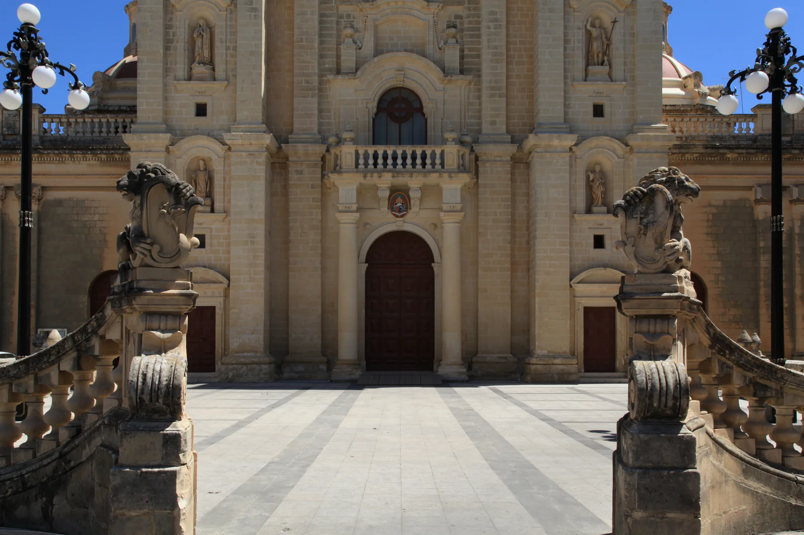

The parish-centre image establishes place character. It does not promise a church view, pedestrian access or the same frontage for every home.

ĦAŻ-ŻEBBUĠ · CITTÀ ROHANOld core.
Old core.
Exact address.
Stone streets, the parish square and the De Rohan approach give Ħaż-Żebbuġ a legible centre. A locality label still cannot tell you the character, access or daily rhythm of a particular block.
ONE MALTA LOCALITY
Start with the name. Then verify the edge.
The official council directory distinguishes Ħaż-Żebbuġ on Malta from Iż-Żebbuġ on Gozo. Birżebbuġa is a third, separate locality. The 2906 taxonomy points to the Malta locality, but keeps exact property positions private.
Road width, parking, pavement continuity, building use and evening activity belong to the exact address and viewing time.
Ħaż-Żebbuġ, Iż-Żebbuġ and Birżebbuġa need separate operator addresses, maps and editorial pages.
A city title made visible.
The Restoration Directorate records the 1777 elevation to Città Rohan and the arch's 1798 inauguration. It also records the monument's 1935 protection and 2009 Grade 1 designation. These are site facts, not a promise of interior access or a walking route.
Restoration Directorate record ↗A trail exists; conditions still change.
VisitMalta lists a Ħaż-Żebbuġ Heritage Trail among its official walks. Use the current trail material for route detail. This edition invents no geometry, duration, surface condition or accessibility claim.
VisitMalta walks ↗EVERYDAY CHECKS
Concrete services, live details.
These current sources establish practical context. They are not rankings and do not claim that any destination is nearest to a property. Recheck appointments, schedules, opening status and the permitted route directly.
Qormi catchment
Primary HealthCare's current charter places Żebbuġ in the Qormi Health Centre catchment. The live service pages should decide present services and appointment arrangements.
May 2026 service charter ↗Local Council
The Government directory places the council office at 94 Triq Frans Sammut. Current office hours belong on the live official record.
Government council directory ↗Route 61
Malta Public Transport currently lists route 61 with Żebbuġ as its destination. This page freezes no timetable, journey time or stop-to-property distance.
Current route page ↗Branch library
Malta Libraries' 2023 report identifies a Żebbuġ (Malta) branch. Its current address and opening status need a fresh official check before a visit.
Malta Libraries report ↗FOOD WITHOUT A RANKING
Two sourced examples, no “best of” claim.
Operator and regulator records can anchor a viewing-day shortlist. They still do not establish proximity to every home, and current status should be checked before travelling.
OCRA
OCRA describes itself as an Italian restaurant in the heart of Ħaż-Żebbuġ. Use its current operator page for status and booking information.
OCRA operator page ↗St Philip Restaurant
The Malta Tourism Authority directory lists licence RST-13330 at 24 Triq Sciortino, Żebbuġ, Malta. That is a licensing record, not an endorsement or permanent-hours claim.
MTA licensed establishments ↗No invented shortcut.
This edition draws no locality boundary, property pin, straight-line walk, bus schedule, car-traffic estimate or taxi price. Any future route must use verified road or pedestrian geometry from an exact permitted origin and destination. The official heritage trail stays a separate linked source.
Open the locality overview only when you need it.
The map frames Ħaż-Żebbuġ and surrounding place labels for orientation. It deliberately draws no boundary, route, distance, travel time or listing location and loads from OpenStreetMap only after your click.
Local Government council directory · Gozo Region councils · Restoration Directorate · VisitMalta walks · Primary HealthCare service charter · Malta Public Transport · Malta Libraries · OCRA · Malta Tourism Authority
No ranking, fixed opening hours, property-specific distance, guaranteed view, parking claim, accessibility promise or locality-wide journey time is implied.